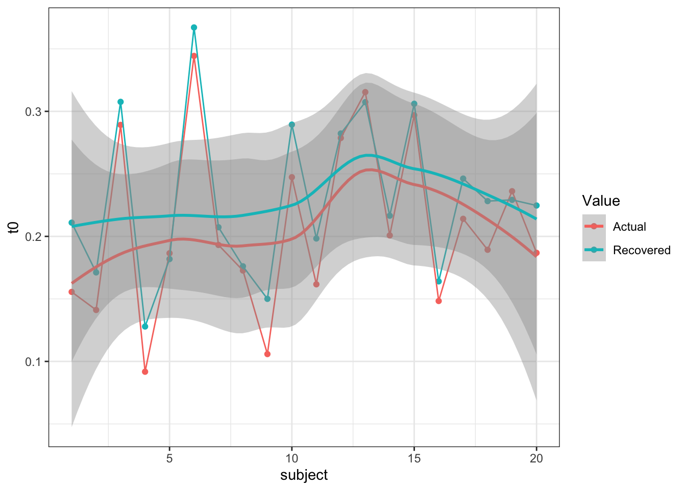
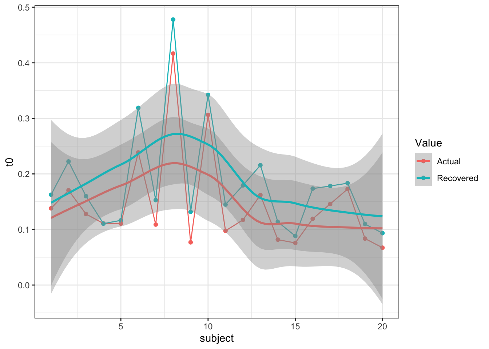
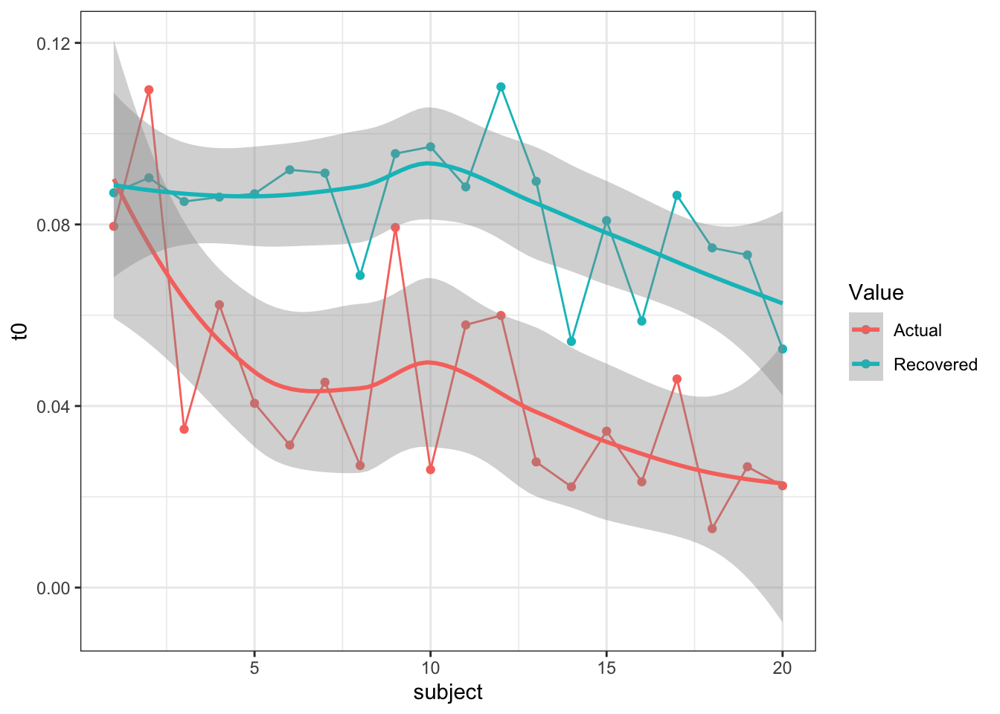
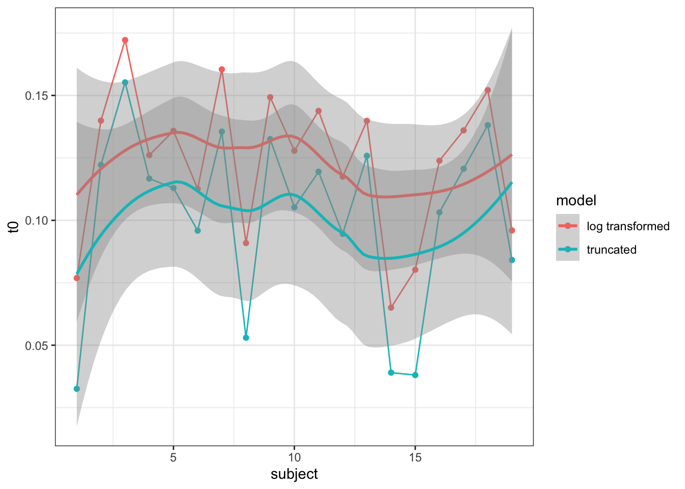
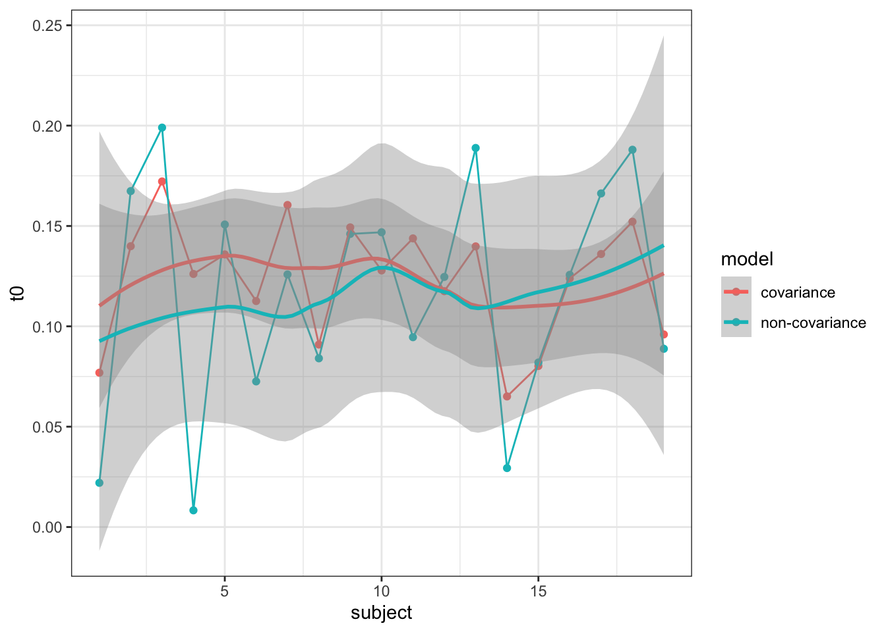

There has been substantial research and debate over the non-decision time parameter of evidence accumulation models. For LBA and diffusion models, there is often a discrepancy, where diffusion models show longer t0 times, with the LBA known to poorly estimate this parameter. Researchers are aware of this, however, the issue is largely ignored. Research into this parameter has used neural measurement data and muscular activity to provide useful estimates of t0 (i.e. the upper and lower limits of the parameter) to give a sense of how accurate this estimation is.
Recently, following a paper by Gunawan et al., (2020), a new method of Bayesian hierarchical estimation was outlined which shows more reliable parameter estimation. Following several modelling exercises using this method (known as Particle Metropolis within Gibbs - PMwG), it was found that t0 estimates were much improved from previous DE-MCMC sampling methods. “Improved” being that estimates of t0 often centered around 0.01 seconds, whereas in PMwG, this was closer to 0.1 seconds - much more reasonable and in line with literature. So maybe it wasn’t so much a problem with the model, but rather a problem with the model estimation. In this blog post, i explore why this might be.
First of all, I’ll make sure this holds in a parameter recovery exercise - after all, we would like to know if the LBA is still doing a not-so-great job of figuring out t0. In this simulation exercise, I show t0 recovering at 3 different values for a single t0 LBA model (i.e. one t0 for all simulated conditions) and 3 lots of t0 values for a three t0 model (i.e. each condition has a t0 value). In the code below, small, medium and large refer to the input t0 parameters (small = fast t0, large = slow t0).
| t0 | |
|---|---|
| Actual.t0 | 0.2000000 |
| Recovered | 0.2254268 |
| t0 | |
|---|---|
| Actual.t0 | 0.1000000 |
| Recovered | 0.1715356 |
| t0 | |
|---|---|
| Actual.t0 | 0.0300000 |
| Recovered | 0.0836326 |



| t0 | |
|---|---|
| Actual.t01 | 0.1500000 |
| Actual.t02 | 0.2000000 |
| Actual.t03 | 0.2500000 |
| Recovered.t01 | 0.1227897 |
| Recovered.t02 | 0.1991755 |
| Recovered.t03 | 0.1987277 |
| t0 | |
|---|---|
| Actual.t01 | 0.0500000 |
| Actual.t02 | 0.1000000 |
| Actual.t03 | 0.1500000 |
| Recovered.t01 | 0.0733236 |
| Recovered.t02 | 0.1138871 |
| Recovered.t03 | 0.1758666 |
| t0 | |
|---|---|
| Actual.t01 | 0.0300000 |
| Actual.t02 | 0.0600000 |
| Actual.t03 | 0.0900000 |
| Recovered.t01 | 0.0507706 |
| Recovered.t02 | 0.0972373 |
| Recovered.t03 | 0.1111606 |
So, it looks like t0 recovers relatively well, but maybe overestimates smaller values. This means that the LBA may still not perfectly estimate actual t0 values, but could also come from the variance in the individual subject synthetic parameters. One thing is for sure though, t0 is recovered at reasonable values compared to old DE-MCMC. So what could help this estimation method?
One answer to this question is the log transformation of the parameter vector. This was proposed in Gunawan et al., (2020) so that values drawn from PMwG, which are on the real number line, could be used with the LBA - which requires positive-definite values. Hence, when using the LBA in PMwG, we take the exponent of the proposal parameters to calculate the likelihood - where we return the log of the likelihood.
Essentially by doing the log transform of the parameters, all particle values are sampled from the real number line. This makes it starightforward to specify their joint distribution as a multivariate normal (with full covariance matrix structure). Previously, we would’ve assumed that the prior joint distribution of the parameters was an uncorrelated, truncated (at zero) univariate normal. In this new approach, with the log transform (which in practice is just taking the exponential of the values on the real line), there are two key advantages; increasing sampling efficiency (sampling from the real line) and using more informed prior knowledge. further, previous methods could lead to overconfidence in the precision of estimation, and underestimation of the magnitide of individual differences - which could be key in estimating t0. With the covariance matrix able to be estimated, this links to the next section, but also, the log transform is necessary to better estimate this structure.
To test the log transform, I use the Forstmann et al., (2008) dataset reported in Gunawan et al., (2020) for a 3 threshold LBA. Using the PMwG sampler, I fit the model twice, using varying likelihood functions - one which takes the exponent of the proposed values and one which returns bad likelihoods for proposed values below 0 - i.e. method one is the log transformed way, method two is the untransformed (but protected against negative values) way.
The results are shown below.
| t0 | |
|---|---|
| Log Transformed | 0.1207189 |
| Truncated values | 0.1004302 |

In this section, I investigate whether the covariance matrix could be a main cause for better estimates of t0. As mentioned earlier, PMwG samples from the real line, making it easy to specify the parameters (particles) distribution as an unconstrained multivariate normal distribution with full covariance structure. Using the particle approach has an advantage over other MCMC methods as we can jointly estimate the density of parameters, which enables the covariance matrix to be informed, which then constrains proposed particles.
To test whether the covariance matrix is a main cause for more accurate t0 estimation, I again ran the above model of the Forstmann et al., (2008) data set (with the log transform) over two different iterations. The first iteration ran PMwG as the R package defaults too. In the second iteration, I changed the v-half parameter, which is the hyperparameter on Σ prior (Half-t degrees of freedom). We tend to use v-half = 1. But to constrain the covariance matrix, I set v-half to 1000, essentially rendering the matrix useless.
The following shows the results of this change.
| t0 | |
|---|---|
| Exponential with Covariance | 0.1207189 |
| Without Covariance | 0.1058109 |

Evidently, removing the restraint from the covariance matrix leads to less reliable sampling and worse t0 estimates. Evidently, it is not directly one reason that t0 estimates more reliably in PMwG, but a combination of things.
Evidently, although the sampler does a good job in recovering most values of t0, we still see some hierarchical shrinkage, especially with larger t0 values. This is to be expected with hierarchical Bayesian sampling models, however, should still be considered when reporting results.
Forstmann, B. U., Dutilh, G., Brown, S., Neumann, J., Von Cramon, D. Y., Ridderinkhof, K. R., & Wagenmakers, E. J. (2008). Striatum and pre-SMA facilitate decision-making under time pressure. Proceedings of the National Academy of Sciences, 105(45), 17538-17542.
Gunawan, D., Hawkins, G. E., Tran, M. N., Kohn, R., & Brown, S. D. (2020). New estimation approaches for the hierarchical Linear Ballistic Accumulator model. Journal of Mathematical Psychology, 96, 102368.